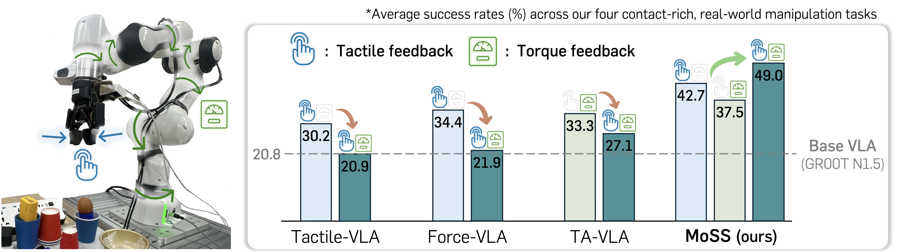
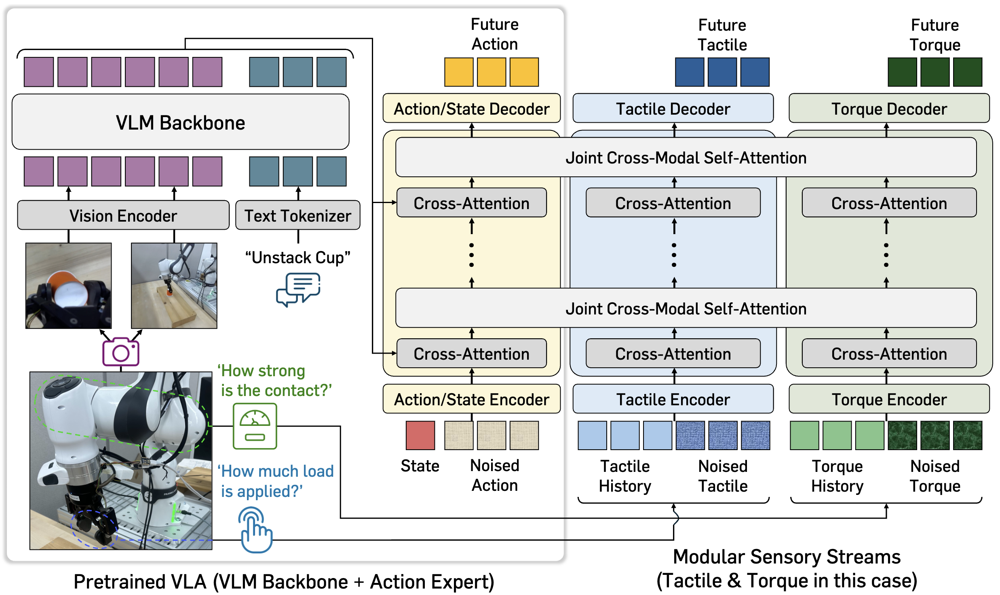

TL;DR: MoSS enables Vision-Language-Action models to jointly leverage multiple physical feedback via modular sensory streams, yielding synergistic gains on contact-rich manipulation.

Humans understand and interact with the real world by relying on diverse physical feedback beyond visual perception. Motivated by this, recent approaches attempt to incorporate physical sensory signals into Vision-Language-Action models (VLAs). However, they typically focus on a single type of physical signal, failing to capture the heterogeneous and complementary nature of real-world interactions. In this paper, we propose MoSS, a modular sensory stream framework that adapts VLAs to leverage multiple sensory signals for action prediction. Specifically, we introduce decoupled modality streams that integrate heterogeneous physical signals into the action stream via joint cross-modal self-attention. To enable stable incorporation of new modalities, we adopt a two-stage training scheme that freezes pretrained VLA parameters in the early stage. Furthermore, to better capture contact interaction dynamics, we incorporate an auxiliary task that predicts future physical signals. Through extensive real-world experiments, we demonstrate that MoSS successfully augments VLAs to leverage diverse physical signals (i.e., tactile and torque), integrating multiple signals to achieve synergistic performance gains.
MoSS is a modular adaptation framework for VLAs that enables scalable integration of multiple physical sensing modalities for contact-rich manipulation. The framework has two core components: (a) modular sensory streams, which process each physical signal (e.g., tactile, force, or torque) in parallel and inject them into the pretrained action expert via joint cross-modal self-attention, and (b) a two-stage training scheme, which first aligns the sensory streams with the frozen pretrained VLA and then jointly fine-tunes all components for coordinated control. In addition, an auxiliary future physical-signal prediction objective encourages the model to internalize contact dynamics, allowing heterogeneous sensory inputs to be combined in a synergistic and scalable manner.

We present real-robot demonstrations for each task. Use the dropdown menu to select different task variants.
GR00T N1.5 (Failure)
GR00T N1.5 + MoSS (Ours; Success)
GR00T N1.5 (Failure)
GR00T N1.5 + MoSS (Ours; Success)
GR00T N1.5 (Failure)
GR00T N1.5 + MoSS (Ours; Success)
GR00T N1.5 (Failure)
GR00T N1.5 + MoSS (Ours; Success)
@misc{lee2026moss,
title={Modular Sensory Stream for Integrating Physical Feedback in Vision-Language-Action Models},
author={Jimin Lee and Huiwon Jang and Myungkyu Koo and Jungwoo Park and Jinwoo Shin},
year={2026},
eprint={2604.23272},
archivePrefix={arXiv},
primaryClass={cs.RO},
url={https://arxiv.org/abs/2604.23272},
}